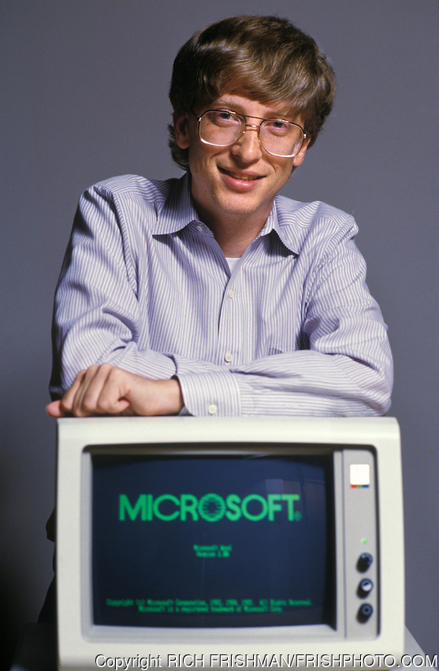

The two people who almost made the computer industry what it is today. They were Bill Gates the founder of Microsoft and Steve Jobs the founder of apple computer. Bill Gates was in high school when he was introduced to computers. He immediately fell in love with them the first thing he did was that he made a tic tac toe program so he can play with the class. At his high school Lakeside he met his best friend Paul allen and they both bonded over computers. After High school he went to harvard but he dropped out in his 2nd year at the school when his friend moved to boston. 1975 is when they got together and made what is now known as microsoft which stands for micro-computer and Software. When microsoft was working for big companies Bill Gates personally review every line of code before sending out the code to the companies.
Bill Gates released the first version of Microsoft Windows in 1989. Over the years Bill Gates became an instant millionaire when the stocks of microsoft went up to $21 a stock. Even being in front of everyone Bill Gates always looks at the competitors to see what they are releasing. Microsoft and windows had a feud between them from the beginning to try to see who is the best. Apple got mad at windows for having almost the identical GUI with in the computer they even had a lawsuit for sueing for copying there GUI. Bill Gates and steve Jobs where the first people to revolutionize the the personal computer. Both of them going back and forward made the computer evolve really fast.
Steve Jobs was immediately interested in computer science when he was little his dad got Jobs into taking apart and putting back computers. When he was in high school he met his best friend Steve Wozniak they became instant best friends and talked all the time. After high school Steve Jobs went to Reed College in portland but he dropped out in only Six months After he left college Steve jobs and his friend started apple computers at the age of 21. They help the computer industry by making the computers smaller, cheaper, and easier for the everyday person. After the first computer came out Apple became in instant hit with everyone by the Apple 2 the sales increase by 700%.
But with the first computer they release it had a lot of troubles with it and a lot of people called with complains. Years later Jobs got kicked out of his own company by the ceos of apple overpowering him. When they finally let Steve Jobs Back into apple they put him on the project called macintosh which was just a side project at the time. Jobs made the macintosh one of the most knowed computer to date. If Jobs would have never came back apple might have not been as popular as it is today or even still be around. Later in his life Jobs was diagnosed with pancreatic cancer during the time when he was getting ill he stopped his feud with Bill Gates and they became great friends for quite a while before Steve Jobs died from his cancer. Bill Gate helped apple by giving the company 150 million in investments. Both Bill Gates and Steve Jobs made what computers are. Without both of them going back and forward is what boosted the want of computers.